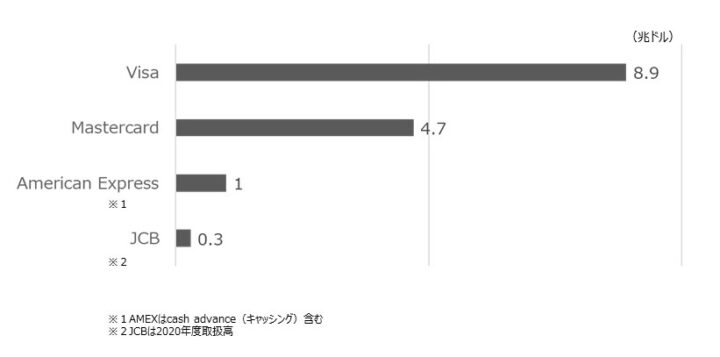
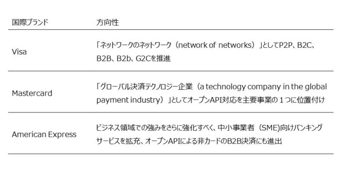
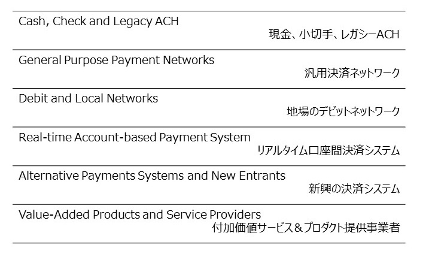
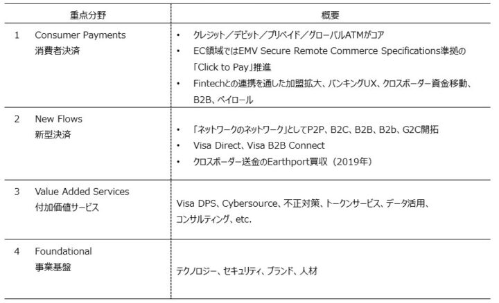
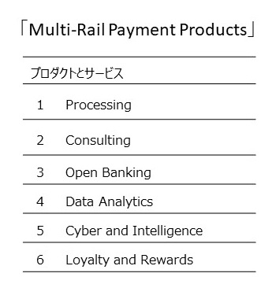
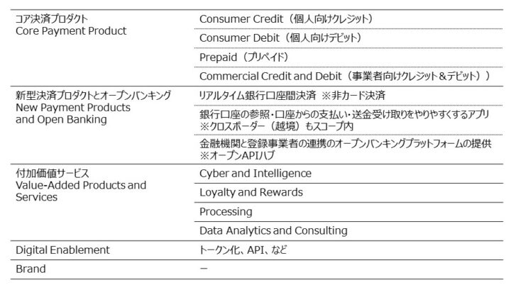
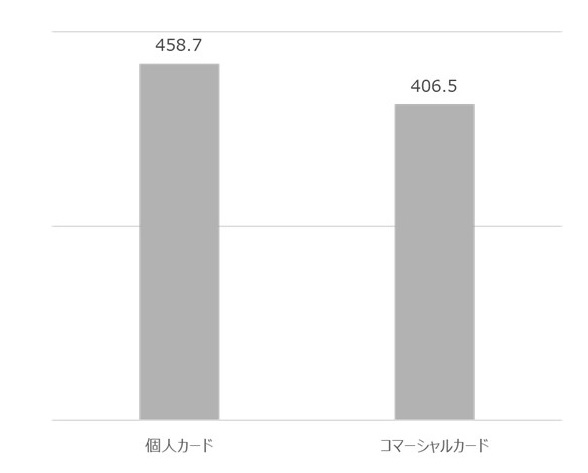

今回は、グローバルに展開している国際ブランドであるVisa/Mastercard/American Expressの動向を紹介する。Visaは「ネットワークのネットワーク」としてB2B、G2Cなど多様な資金移動の取りこみに動いている。Mastercardは銀行API制度であるOpen Bankingへの対応を事業の柱へと育成している。また、American ExpressはSME向けバンキング機能の拡充で訴求力強化に動いている。
この記事は『CardWave』338号(2021年11・12月号)に掲載された「Visa・Mastercard・Amexの戦略分析 カード決済の枠を超えた未来市場への取り組み」の転載記事です。
決済ネットワークとしての国際ブランド
決済業界の外から見ると分かりにくいことの一つが、VisaやMastercardといった国際ブランド各社の事業内容だ。ブランドロゴのあるカードを利用していても、VisaやMastercardと直接やりとりすることはない。「国際ブランド」という呼び名からも、決済処理における彼らの役割は想像できない。
本誌読者には当然のことだが、国際ブランド企業の実態は多様なステークホルダーをつなぐことで円滑な決済処理を実現するネットワーク事業者。英語圏での「決済ネットワーク（payment networks）」との呼び名のほうが分かりやすい。
グローバル決済市場を俯瞰すると、PayPalのようなカード以外の独自決済や各種のQRコード決済、銀行業界による独自のデビットサービスや新興のBNPL（Buy-Now-Pay-Later;後払いサービス）など決済サービスは多様化する一方だが、そんな中でも国際ブランドカード決済の存在感は圧倒的だ。

図１ 主要国際ブランドの2020年決済取扱高
図１に主要国際ブランド各社の2020年決済取扱高を示す。最大手Visaは8.9兆ドル、２番手Mastercardは4.7兆ドル。ちなみに日本の2020年GDPは5.0兆ドルだ。３番手American Expressは１兆ドルだが、ここにはATM引出など決済以外のキャッシング（cash advance）取扱高も合算されている。国産ブランドのJCBは、ドル換算で約3,000億ドルである。
今回は、グローバルに展開している国際ブランドであるVisa・Mastercard・American Express の動向を紹介する。キャッシュレス決済におけるカード決済の立ち位置は盤石に見えるが、テクノロジーの進歩やスマートフォン普及などの生活習慣の変化、そして続々と出現する競合サービスによって市場環境は激しく変化し続けている。
Visa/Mastercard/American Expressは市場の変化を傍観しているわけではなく、将来の市場における自らの地位を確保するためさまざまな手を打っている。国内市場からは見えにくいグローバルな動きから、いくつかのトピックに絞って考察する。なお、国内業界にとってはJCB、銀聯の存在感も大きいが、JCBに関する情報は国内にも豊富であること、銀聯はグローバル展開という点でVisa/Mastercard/AmericanExpressと同列とはいえないため、スペースの都合もあり今回は対象外としている。
大手3社の戦略の概要
まず、表１に各社の大きな方向性をまとめた。

表１ 主要国際ブランド３社の戦略概要
Visaは最新（2020年度）の年次報告書にて自身を「network of networks」と位置付けている。多くのステークホルダーが直接参画するネットワークであるだけでなく、国ごと・業界ごとに存在するローカルなネットワーク同士をつなぐ「ネットワークのネットワーク」として、国や業界などの領域をまたいだトランザクションを担っていく、という意思表明だ。
また、決済すなわち消費者と加盟店の間の資金移動という伝統的なカード決済の守備範囲にこだわらず、より広い範囲での決済と送金での自社サービスを普及させていくとし、具体的には、P2P（個人間）、B2C（企業-消費者間）、B2B（企業間）、B2b（大企業-中小企業間）、G2C（政府-消費者間）といった領域を挙げている。
Mastercardも、「国際ブランド」や「カード決済ネットワーク」という従来の枠組みからの脱却を図っている。同社の年次報告書の本文の１行目は「Mastercardはグローバル決済テクノロジー企業です（Mastercard is a technology company in the global payment industry）」となっており、これは2011年から変わっていない。Mastercardの取り組みの特徴は自社ネットワーク「Banknet」を経由しない非カードの決済トランザクション、特に欧米における銀行オープンAPI活用の取り組みである「Open Banking（オープンバンキング）」への積極的な対応にある。カード決済インフラを経由しない新型のA2A決済（Account-to-Account、すなわち銀行口座直結型決済）をMastercard自らが提供するなど、オープンAPI対応を主要事業の一つに位置付けている。
Visa/Mastercardに規模では大きく劣っているAmerican Expressだが、上位2社にはない特徴がいくつかある。American Expressは決済ネットワーク事業だけでなく、自らカード発行（イシュイング）と加盟店業務（アクワイヤリング）も行っていること、傘下には銀行もあり、カード決済だけでなく銀行サービスも提供していること、そして中小事業者（SME）を含むビジネス利用者を多く抱えており、ビジネス領域での大きな強みを持っていることだ。それをさらに強化すべく、最近でもSME向けバンキングサービスの拡充やオープンAPIによる非カードのB2B決済にも進出している。

表２ 国際ブランドにとっての競合サービス
表2は、国際ブランドにとっての競合サービスのリストで、これはMastercardの年次報告書から抜粋して作成した。第一の競合は現金や小切手といった紙ベースの支払い手段、そして口座間送金インフラであるACH（Automated Clearing House）が挙げられている。日本の全銀システムによる振込みに近いが、サービスレベルは全銀に劣ることが多い。
「汎用決済ネットワーク」とは、Visaなどの同業他社のこと。「地場のデビットネットワーク」とはJ-Debitをイメージすると分かりやすい。欧州などでも、国内銀行業界によるデビットサービスが普及している国もある。「リアルタイム口座間決済システム」は、多くの国が取り組む新たな送金インフラのことだ。日本では全銀システムが早くからリアルタイム送金を実現しているが、例えば米国の従来のACH送金は着金まで数日かかる。今までは送金の不便さがカード決済の優位性に直結していたが、利便性の高い新たな送金インフラが次々に稼働を開始している今の状況では、国際ブランドも自社サービスの訴求点をより研ぎ澄ませていく必要がある。
「新興の決済システム」とは米国のPayPalや中国のAlipay、さらにはBNPLなどが該当する。国内ではPayPayなどのQRコード決済勢や、以前からあるとはいえFeliCa型電子マネーなどが例となる。そして「付加価値サービス＆プロダクト提供者」とは、例えば決済データを活用したコンサルティングサービスや不正検知ソリューション事業者。Mastercardなど国際ブランド各社もそのような付加価値サービス事業を営んでいるため、こうした事業者も競合として位置付けられる。国際ブランドの事業領域の広さが感じられる例だ。
ネットワーク拡大に挑むVisa
Visaは年次報告書において、四つの分野を注力分野（Key Focus Areas） とした（ 表３）。

表３ Visaの注力分野
第一は「Consumer Payments（ 消費者決済）」。クレジット、デビット、プリペイド、グローバルATMがコアプロダクトとして挙げられている。
EC領域では、EMV Secure Remote Commerce Specifications準拠のウォレットサービスである「Click to Pay」の推進が目を引く。これはPayPalなどに対抗していくため、「Visa Checkout」や「Masterpass」等の個社サービスを発展的に解消し、EMVのもとで普及拡大に努めているウォレットサービスだ（詳細は本誌2019年11月・12月号の筆者寄稿「国際ブランドが仕掛けるSRCとは!?」参照）。初めて利用するECサイトであってもPAN入力不要で決済が可能という点でUX的にはPayPalと同等、最近のBNPLの興隆においても対抗策となりうるだろう。
EC領域での自前主義脱却の例が「Click to Pay」だが、幅広い領域でもFintechとの連携によるビジネス拡大を目指している。新たなバンキングサービスUXの提供、国境をまたぐクロスボーダーでの資金移動、B2B決済やペイロール（給与支払い）が例として挙げられている。
目を引くのは第二の注力分野である「New Flows（新型決済）」。「ネットワークのネットワーク」という方向性はここに効いてくる。P2P、B2C、B2B、B2b、G2Cといったカード決済とは異なる資金の流れを取りこんでいく上で武器となるのは、デビットカード口座へ送金を仕向けられる「Visa Direct」。Fintechサービスが提供する口座の入出金や決済サービスにおける加盟店への売上入金などにも使われており、Fintechを支える裏方ともなっている。年次報告書によると2020年には35億件のトランザクションを処理したとのことで、着々と影響力を拡大してい
る。
B2B分野では企業間のクロスボーダー送金の「Visa B2B Connect」が挙げられている。VisaNetとは独立に、分散台帳技術を用いて構築され2019年から稼働している送金ネットワークだ。2019年はさらにB2Bクロスボーダー送金のEarthportも買収しており、B2Bへの力の入れ具合がわかる。
第三と第四の注力分野はそれぞれ「Value Added Services（付加価値サービス）」と「Foundationals（事業基盤）」であるが、本稿と関連する大きな動きは特にない。
Mastercardとオープンバンキング
Mastercardの年次報告書においては、自社プロダクト/サービスを「Multi-Rail Payment Products」と表現している。訳しづらいが、いかなる経路（rail）で処理される決済トランザクションであっても、それをMastercardが担っていく、という意思が込められている。「カードと非カードを含むすべての決済を支えるテクノロジー企業」という、新たなアイデンティティとも整合している。

表４ Mastercardの事業概要
年次報告書に列挙されたプロダクトは表４のとおり。「Processing」とは従来のカード決済トランザクションの処理、「Consulting」「Data Analytics 」「Cyber and Intelligence」「Loyalty and Rewards」は決済サービスをベースとする付加価値サービスで、大きな方向性としてはVisa等と共通する。
筆者が注目するのは、「Open Banking」が主要プロダクトの一角として記載されている点。世界各地の銀行業界によるオープンAPI制度への対応が、重点分野として明確に位置付けられている。

表５ Mastercardのサービス概要
「Open Banking」における具体的なサービスイメージも年次報告書に記載がある（表５）。「コア決済プロダクト」である個人/事業者向けカードサービスと併記される形で、「新型プロダクトとオープンバンキング」というカテゴリーが立っている。そこには「リアルタイム銀行口座間決済」「銀行口座の参照・口座からの支払い・送金を受けやすくするアプリ」、そして「金融機関と登録事業者の連携のオープンバンキングプラットフォームの提供」が列挙されている。このどれもが、従来の国際ブランド業務からはかけ離れたもので、Mastercardが築いてきたBanknetには関連しない。しかし、銀行のオープンAPI対応を支援し、API型のA2A決済を提供していくことに、Mastercardは活路を見出しているのである。
無論、Mastercardの業績データをみると、オープンバンキング関連事業からの貢献はゼロに近い。収益的には依然としてカード決済事業が柱である。しかし、オープンバンキングの普及で、非カードのA2A決済が広まる環境は整いつつある。Mastercardが抱く危機感は欧州市場において最も強い。
2018年に施行されたEUの改正決済サービス指令（PSD2）で、欧州地域の銀行はAPI開放が義務付けられた。域内の当局に登録した事業者は、API経由で口座情報を参照したり資金移動を指図することができ、銀行側は接続を拒否する裁量は与えられていない。PSD2に先行して独自にオープンバンキング制度を敷いた英国では70以上の事業者が登録済みで、APIを用いた独自の決済・送金サービスを展開するものもある。
銀行オープンAPI制度はあるが銀行側に大きな裁量を認めている日本や、制度自体が無く民間各社の取り組みに任されている米国とは大きな温度差がある。
欧州市場、特に英国においてMastercardはオープンバンキング関連事業を積極的に推進してきた。最も大きな例は英国にて2018年に提供開始した「Pay By Bank」。EC向けのA2A決済で、購入画面でPay By Bank決済を選択すると銀行アプリが立ち上がり、ユーザーによる承認を経て送金が行われる。2016年に買収したVocalinkの取り組みを発展させたもので、いわゆるオープンバンキングとは異なるスキームだが、非カードのA2A決済へのMastercardの意気込みがわかる好例となっている。2021年8月にはRoyal Bank of Scotlandも擁するNational Westminster Bank (NatWest）もPay By Bank提供開始し、既に加盟していたHSBCやBarclaysと合わせると英国の銀行口座の半数をカバーするまでに拡大している。
さらに2021年7月にはオープンバンキング型A2A送金である「PayFrom Bank」を開始。ファーストユーザーは英国のLloyds銀行で、慈善団体への個人からの寄付などに利用されている。ほかにもデンマークの法人A2A決済のNetsの法人部門を買収するなど、主に欧州地域でのA2A決済対応を進めている。
日本国内ではカード業界が銀行業界と切り離されて発展してきたため、Mastercardと銀行の結びつきはピンとこないかもしれないが、カード決済がリテールバンキングの一環である欧米諸国においてはMastercardと銀行は既にBanknetでつながっている。オープンバンキング関連事業とは、Banknetというインフラではなく、銀行とのリレーションをフルに活かしてAPI経由でのサービス提供につなげる取り組みといえる。
SME支援を強化するAmerican Express
「ビジネス利用に強いAmerican Express」が分かるデータを図２に示す。自社発行の個人カードの取扱高4,687億ドルなのに対し、自社発行コマーシャルカード取扱高は4,065億ドル。ビジネス利用の規模の大きさはAmerican Expressの特徴であり、強みとなっている。（年次報告書等はこちらのページからダウンロードできる。）

American Express自社発行カードの2020年取扱高（単位：１０億ドル）
ビジネスユーザー、特にSMEへの訴求力の強化がAmerican Expressの大方針だ。2020年にはSME向け融資を含むキャッシュフローソリューションのKabaggeを買収。American Expressの銀行機能と組み合わせ、Kabbageユーザー向けのビジネス口座サービスを開始している。さらに2021年10月には、American Express自ら、SME向けビジネス口座を提供開始し、同社として初のデビットカード発行に踏み切った。
さらに英国では銀行APIを経由して資金移動指図を行うための事業者登録（PISP登録）を行い、それを用いたB2Bの口座間送金サービス「Pay with Bank Transfer」を開始している。
2021年9月にはFintech企業のExtend と提携し、American Expressのビジネスカード会員が、ネット利用可能なバーチャルカードを即時発行できるサービスを開始した。目的に応じてバーチャルカードを発行し従業員に渡して利用させる、などの新たな利用法が可能となり、業務改善に効果が見込まれる。仕組みとしてはEMVトークンの発行であって、既存会員側の手続き不要で大幅な機能拡張が実現できている。「法人カードのガバナンス問題」への一つのソリューションとして興味深い。


{kind=link}
{kind=link}
{kind=link}
{kind=link}
{kind=link}
{kind=link}
{kind=link}
{kind=link}